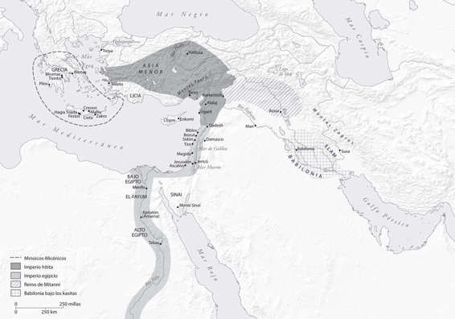

Indice

Frontispicio. Mapa de las civilizaciones de la Edad del Bronce tardía en el Egeo y el Mediterráneo oriental
Dedicado a James D. Muhly, que durante casi medio siglo ha estado debatiendo sobre estos temas y presentándoselos a sus alumnos.